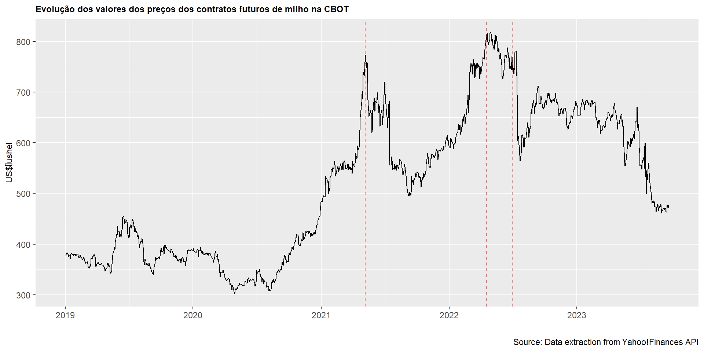

Seleção e otimização de portfólio de commodities em condições de incerteza:
Econometria de Séries Temporais e Otimização MultiObjetivo Multiperíodo
Live YouTube
Conteúdo
O que é econometria ?
Econometria versus Data Science
Regressão e Causalidade
Machine Learning x Big Data x Econometria
10 erros comuns na construção de um modelo econométrico
Um exemplo de aplicação: Econometria de Séries Temporais e Otimização MultiObjetivo MultiPeríodo
Porque aprender econometria impulsiona minha carreira ?
O que é econometria ?
Quatro grupos de conceituação presentes na literatura:
a ciência de testar teorias econômicas;
o conjunto de ferramentas usadas para prever valores futuros de variávies econômicas, como vendas de uma empresa, o crescimento geral da economia ou os preços das ações;
o processo de ajustar modelos econômicos matemáticos a dados do mundo real.
é a ciência e a arte de usar dados históricos para criar recomendações de políticas numéricas ou quantitativas no governo e nas empresas
Como a Economia é uma ciência social aplicada (não é exata), o desafio que a faz extremamente interessante paira na questão da incerteza e das inúmeradas descobertas e possibilidades ! Afinal…
“Herrar é umano!”
O método da econometria


O método da econometria
Segundo Maddala, (2001, p. 6):
"Esta abordagem pode ser denominada de abordagem de confirmação da teoria econômica. O problema dessa abordagem, de acordo com Mark Blaug, é que:
[Em muitas áreas da economia, diferentes estudos econométricos chegam a conclusões conflitantes, e com base nos dados disponíveis, frequentemente não há método eficiente para decidir qual conclusão é a correta. Em consequência, às vezes, pressupostos contraditórios continuam a coexistir por décadas ou mais.]
"Um modo mais válido de testar uma teoria econômica é verificar se ela é capaz de formular previsões melhores do que as teorias alternativas sugerem anteriormente. Assim, torna-se necessário comparar um dado modelo com os anteriores. Esta abordagem de avaliação de teorias tem recebido maior atenção nos últimos anos."
Curva de Phillips
Curva de Kuznets
Econometria x Data Science (hype)
Source: Marginal Revolution University
Regressão x Causalidade

Regressão x Causalidade
Vamos distinguir a análise de regressão de análise de correlação:
Correlação busca refletir o grau de associação numérica entre duas variáveis;
Análise de regressão é utilizada como propósito de desenvolvimento estatístico que possa ser utilizada para prever os valores de uma variável dependente ou variável de resposta com base nos valores de pelo menos uma variável independente ou explicativa.
O interessante é pensarmos que os resultados gerados por uma análise de regressão não indica causalidade, ou seja, ela não é precisa no que diz respeito a verdadeira direção da causa e efeito:
"É importante ressaltar que embora a análise de regressão lide com a dependência de uma variável em relação a outras variáveis, ela não implica necessariamente em causa. Uma relação estatística, por mais forte e sugestiva que seja, jamais pode estabelecer uma relação causal. As idéias sobre causa devem vir de fora da estatística, enfim, de outra teoria."
Fonte: FGV (2010)
Em séries temporais vide p .ex. o teste de causalidade de Granger (precedência):
"Granger parte da premissa de que o futuro não pode "causar" o presente ou o passado. Se o evento A ocorre após o evento B, sabemos que A não pode "causar" B. Ao mesmo tempo, se A ocorre antes de B, isso não implica necessariamente que A causa B. Por exemplo, a previsão do tempo ocorre antes da chuva. Isso não significa que a previsão "cause" a chuva. Na prática, observamos A e B como séries temporais e gostaríamos de saber se A precede B, ou se B precede A, ou se eles são contemporâneos. Por exemplo, se os preços precedem movimentos nas taxas de juros, ou ocorre o contrário, ou os movimentos são contemporâneos ? Esse é o propósito da causalidade de Granger, que não é causalidade conforme ela é geralmente compreendida."
(Maddala, p. 202, 2003)
Métodos de Regressão e Causalidade
Alguns métodos de regressão muito comuns em inferência causal na econometria:
Variáveis instrumentais \(\Rightarrow\) É um método utilizado quando existe endogeneidade, ou seja, quando uma variável explicativa está correlacionada com o termo de erro do modelo. O IV usa variáveis instrumentais que estão correlacionadas com a variável explicativa, mas não com o termo de erro, para estimar o efeito causal corrigido. (leia esse artigo interessantíssimo do prof Rob Hyndman demonstrando as diferenças da estatística e da econometria e inferência causal) “Econometrics is often “theory driven” while statistics tends to be “data driven”.”
Modelos Dif-and-Dif \(\Rightarrow\) É um método utilizado para estimar o efeito causal de uma intervenção ou tratamento em um grupo de tratamento em relação a um grupo de controle. Ele compara as mudanças nas médias antes e depois da intervenção entre os dois grupos.
Regressão com Discontinuidade \(\Rightarrow\) É um método utilizado quando há uma variável contínua que determina se uma observação é tratada ou não. Ele compara as unidades próximas a um ponto de corte que determina a aplicação do tratamento, permitindo estimar o efeito causal desse tratamento.
Propensity Score Matching \(\Rightarrow\) É um método causal utilizado na econometria para estimar o efeito causal de um tratamento ou intervenção em relação a um grupo de controle. Ele baseia-se na construção do escore de propensão, que é a probabilidade de um indivíduo receber o tratamento com base em suas características observáveis.
Análise de Intervenção em Séries Temporais \(\Rightarrow\) Esse método busca identificar a mudança na série temporal após a introdução de uma intervenção, controlando fatores externos que poderiam influenciar a variável de interesse. Um exemplo popular de algoritmo que implementa esse método é o Google CausalImpact. O Google CausalImpact utiliza um modelo de espaço de estado Bayesianos para modelar a série temporal antes da intervenção e estima a contrafactual (o que teria acontecido sem a intervenção) após a intervenção. Ele calcula uma métrica chamada “Impacto Causal” que mede a diferença entre o valor observado e o valor contrafactual para determinar o efeito causal da intervenção. Esse método permite uma análise rigorosa do efeito causal de uma intervenção em uma série temporal, controlando o efeito de fatores não relacionados à intervenção. (vide um artigo sobre esse tema aqui)
Curso de Inferência Causal no coursera (Columbia University) no codeacademy no datacamp …
Machine Learning x Big Data x Econometria
Source: Marginal Revolution University
Machine Learning x Big Data x Econometria
O fato é que o big data existe, ou seja, a informação e a sua disseminação estão ao dispor de todos e a sua velocidade acelerando-se a cada dia mais e mais, mas menos que proporcionalmente a essa velocidade o crescimento do conhecimento para tratá-la não segue o mesmo ritmo!
"Em alguns casos, estou um pouco preocupado com o fato de o grande volume de dados estar meio que se tornando uma distração."
Josh Angrist in The Mastering Econometrics
\(\Rightarrow\) Princípio “KISS” e overfitting num modelo com muitas variáveis
10 erros comuns na construção de um modelo econométrico

10 erros comuns na construção de um modelo econométrico
Deixar de usar seu bom senso e conhecimento da teoria econômica
Começar com as perguntas erradas sobre o fenômeno investigado
Ignorar os trabalhos e contribuições de outros econometristas (pesquisas científicas)
Não se familiarizar com os dados
Complicar excessivamente o(s) modelo(s); (Keep it simple, stupid!)
Obsessão por medidas de melhor ajuste e significância estatística
Esquecer da significância econômica
Supor que seus resultados sejam robustos sempre
Ser inflexível com as complexidades do mundo real
Ignorar quando encontra resultados bizarros
Fonte: Pedace (2013, cap 19, págs. 315-320)
Proposta de Pesquisa
"Pode-se seguramente declarar [...] que a população, quando não controlada, dobra a cada 25 anos, ou aumenta numa razão geométrica. [...] Mas o alimento, para suportar o aumento de um número tão grande, de nenhum modo será obtido com a mesma facilidade. [...] Pode-se com justeza declarar [...] que, considerando-se na média o presente estado da terra, os meios de subsistência, sob as condições mais favoráveis da indústria humana, possivelmente não poderiam crescer mais rapidamente do que numa média aritmética.” (Thomas Malthus, 1766 - 1834)

- Segundo estudos da FAO de 2009 e 2013, foi exatamente o crescimento da produtividade que permitiu elevar a oferta acima da demanda mundial de alimentos no período pós-revolução tecnológica no campo. A Revolução Verde dos anos 1960 também marcou uma nova era para o crescimento da oferta via ampliação da produtividade.
Um exemplo de aplicação
\(\Rightarrow\) Modelo de Projeção da série temporal dos retornos dos preços dos ativos e recomendação de compra e venda
Source: Data extraction from Yahoo!Finances API
Problemática de Pesquisa
Perguntas
Quais as causas ou desencadeadores desses movimentos repentinos de inversão de tendência nas séries de preços ?
É possível estimar/medir o quanto essas mudanças bruscas de tendência geram de impacto na economia e no mercado de commodities agrícolas ?
Como podemos antecipar/prever o acontecimento dessas “quebras” nas séries temporais de preços no futuro ?
Pode-se otimizar o processo decisório de compra e venda de grãos recomendando as melhores alocações de portfólio de commodities em condições de risco e incerteza ?
Teorias de Base
| Área de Ciência | Teoria | Pensadores |
|---|---|---|
| Microeconomia | Teoria da Demanda e do Consumidor | Walrás, Pareto, Arrow, Debreu, Samuelson, Hicks |
| Microeconomia | Estruturas de Mercado | Porter, Chamberlin, Joan Robinson, Bain |
| Microeconomia | Finanças Comportamentais | Daniel Kahneman, Amos Tversky, Robert Shiller |
| Microeconomia | Eficiência de Mercado | Eugene Fama, Fischer Black e Myron Scholes, Jensen |
| Microeconomia | Teoria do Portfólio | Harry Markowitz, Milton Friedman, Keynes |
| Finanças | Teoria dos Ciclos Financeiros | Hyman Minsky, Irving Fischer, Joseph Schumpeter e Kondratiev |
| Finanças | Teoria do Mais Tolo (ou Teoria do Toque de Midas Reverso) | John Kenneth Galbraith, Nassim Taleb |
| Econometria Financeira | Bayesian GARCH with Markov Regime Switching | David Ardia, Robert Engle, Tim Bollerslev, Gary Koop |
| Macroeconomia | Teoria da Formação das Expectativas | Robert Lucas, Milton Friedman, Edmund Phelps, Franco Modigliani |
| Neuroeconomia | Teoria da Hipótese da Antecipação de Recompensa | Wolfram Schultz, Antonio Rangel, Paul Glimcher |
| Microeconomia | Teoria da Seleção Adversa | George Akerlof, Michael Spence, Stiglitz |
| Complexidade (Física de redes) | Sistemas Dinâmicos Adpatativos não-lineares | Arthur Ávila, Brian Arthur, Robert May |
Hipóteses Científicas
Insights
- Volatility Clustering e mudanças estruturais
- Análise de Intervenção Causal em Séries Temporais nas quebras e “efeito disseminação”
- Desenvolvimentos do modelo de otimização de portfolio de Markowitz (CAPM, B&S, Merton, Black-Litterman …)
- Múltiplos Objetivos variando conforme o contexto de mercado e as expectativas percebidas (risco e incerteza)
Justificativa e relevância
Contribuições teóricas
Identificação dos drivers dos preços auxilia na investigação da causa dos movimentos repentinos nas séries de preços (Teoria da Demanda do Consumidor, Estruturas de Mercado e Teoria do Portfólio [motivo transação, especulação ou precaução]) pode ser utilizada em conjunto com a técnica Econométrica de Análise de Intervenção em Séries Temporais [Angrist e Imbens, Brodersen et. alli (2015)] para avaliar seu impacto causal na série de preço estudada;
A Teoria dos Ciclos Financeiros ajuda a compreender em qual contexto econômico a disseminação de efeito econômico-financeiro nocivo ou positivo está inserida frente a quebra repentina da tendência da trajetória de preços de alimentos (commodities)
O uso das técnicas pertinentes dentro da teoria da Econometria Financeira com o uso do modelo Bayesiano GARCH com mudanças de regime markovianos se mostra aderente à realidade dos dados e condizente com os últimos desenvolvimentos teóricos a respeito do fenômeno da dinâmica complexa dos preços dessas commodities;
A teoria de alocação de portfólio desde Markowitz pode ser melhor elaborada combinando as ferramentas de otimização multiobjetivo multiperíodo de maneira dinâmica em consonância com modelos econométricos que consigam incorporar com maior clareza a “incerteza” percebida pelos players de mercado na sua aferição de risco x retorno. Assim, os processos decisórios de compra e venda em momentos oportunos se tornariam mais claros.
Testes e resultados experimentais
Testes e resultados experimentais
Modelo de Markowitz…
\[ \max \displaystyle \sum_{i=1}^{n} \mu_i w_i \] \[ \min \displaystyle\sum_{i=1}^{n}\sum_{j=1}^{n} \sigma_{ij}w_i w_j \] Sujeito a:
\[ \displaystyle\sum_{ij=1}^{n}w_{ij} \geq 0 \]
\[ \displaystyle \sum_{ij=1}^{n}\mu_{ij} \geq \mbox{taxa básica de juros (TMA)} \]
Testes e resultados experimentais
Limitações do Modelo de Markowitz:
- a Hipótese de Eficiência de Mercado, que anuncia que um investidor não conseguirá atingir de forma consistentemente retornos superiores à média do mercado, considerando as informações publicamente disponíveis quando o investimento é feito;
- Os investidores são racionais, e evitam o risco quando possível;
- Não há assimetria de informação no mercado;
- Não há investidores suficientes para influenciar os preços de mercado;
- Os investidores têm acesso ilimitado a empréstimos e empréstimos à taxa de juros livre de risco.
Modelando o Risco dos retornos dos preços

Brainstorm

Multiobjetivo Markowitz (adaptado)

Revisão Sistemática de Literatura

Artigos replicados e adaptados
Ardia D, Boudt K, Carl P, Mullen KM, Peterson BG (2011). Differential Evolution with DEoptim: An Application to Non-Convex Portfolio Optimization. R Journal, 3(1), 27–34. doi:10.32614/RJ-2011-005.
Ardia, D., Bolliger, G., Boudt, K., & Gagnon-Fleury, J.-P. (2017). The impact of covariance misspecification in risk-based portfolios. Annals of Operations Research, 254(1-2), 1–16. doi:10.1007/s10479-017-2474-7
Jian, L. and Wang, S. (2021). Robust multi-period and multi-objective portfolio selection. Journal of Industrial and Management Optimization. Volume 17, Number 2, March 2021 doi:10.3934/jimo.2019130 in aimsciences.org
Kenneth B., Anish G., S. Kusiaka, Markowitz H., Savoulidesa N. and Zheng, Q. Multi-Period portfolio selection: A practical simulation-based framework. Journal Of Investment Management, Vol. 18, No. 4, (2020), pp. 94–129 in invesco.com
Futuros Estudos

Porque aprender econometria impulsiona minha carreira ?
"Bem, se você acha que a econometria é chata, devo dizer que seus professores falharam com você. Talvez você tenha sofrido um curso de econometria que basicamente trata a disciplina como um tipo de matemática aplicada - muito teórica, muito abstrata."
Josh Angrist in Mastering Econometrics
Muitas fórmulas e abstrações matemáticas…
O raciocínio analítico fornecido pelo conhecimento de aplicação da teoria econômica é fundamental para o negócio;
Viabilidade de uso de modelos de estimativas econômicas complexas com recursos computacionais;
Diferencial em relação aos profissionais que saem “analfabetos funcionais” das universidades mundo afora
Diferencial em relação ao “programador puro” erroneamente chamado de “cientista de dados”
Referências
Angrist, Joshua D., and Jörn-Steffen Pischke. Mastering ’Metrics: The Path from Cause to Effect. Princeton University Press, 2014.
Angrist, Joshua D., and Jörn-Steffen Pischke. Mostly Harmless Econometrics: An Empiricist’s Companion. Princeton University Press, 2009.
FAO. Price volatility in food and agricultural markets: Policy Responses. 2011. Disponível em: http://www.oecd.org/tad/agricultural-trade/48152638.pdf. Acessado em Abr 2022
Pearl, Judea, Madelyn Glymour, and Nicholas P. Jewell. Causal Inference in Statistics: A Primer. Wiley, 2016.
Granger, C. W. J. Empirical modeling in economics. Reino Unido: Cambridge University Press, 1999. p. 58.
Gujarati, D.,N. Basic Econometrics, fourth edition, McGraw-HiII/lrwin, 2011.
Hyndman, R.J., & Athanasopoulos, G. (2021) Forecasting: principles and practice, 3rd edition, OTexts: Melbourne, Australia. OTexts.com/fpp3. Accessed on <may 2023>.
Maddala, G.,S. Introdução à Econometria, terceira edição, LTC, Rio de Janeiro, 2001.
Pedace, R. Econometrics for Dummies. John Wiley & Sons, 2013.
Obrigado!
Rodrigo Hermont Ozon
\(\Rightarrow\) A todos os organizadores do CiDAMO pela oportunidade!
\(\Rightarrow\) Agradecimentos aos pesquisadores do PPGEPS/PUCPR, aos ouvintes e em especial ao meu orientador, prof. Dr. Gilberto Reynoso Meza
- Meu perfil no Google Scholar
- Meu CV Lattes
- Meu site com posts, tutoriais e artigos
- Meu perfil no LinkeDin
"Situations emerge in the process of creative destruction in which many firms may have to perish that nevertheless would be able to live on vigorously and usefully if they could weather a particular storm.
[... Capitalism requires] the perennial gale of Creative Destruction." Schumpeter, Joseph A. (1994) [1942]. Capitalism, Socialism and Democracy. London: Routledge. pp. 82–83. ISBN 978-0-415-10762-4. Retrieved 23 November 2011.